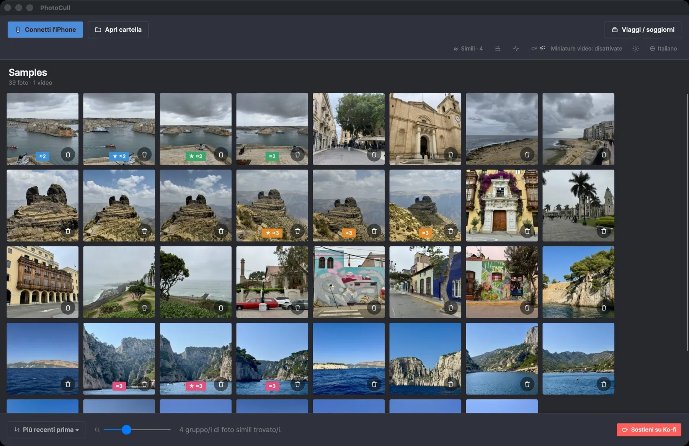
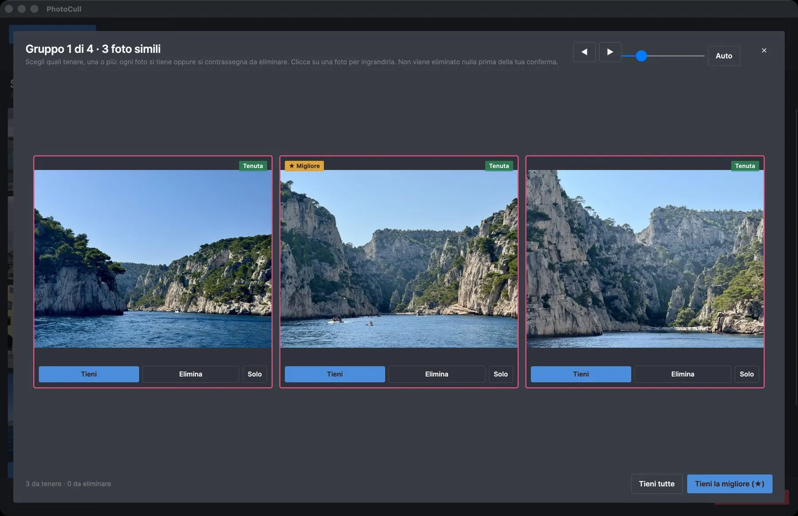
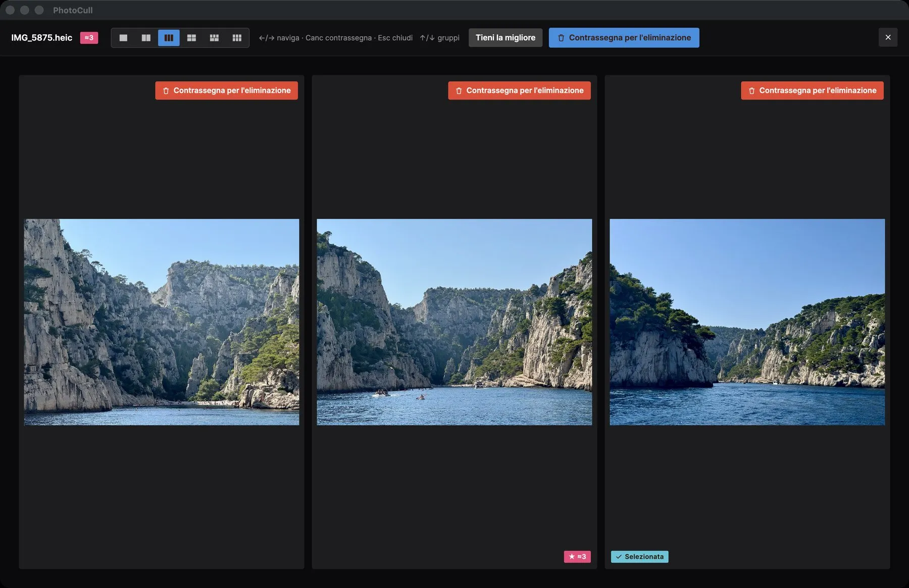

Ordina migliaia di foto dell'iPhone su Mac o PC
PhotoCull è un'applicazione desktop a tutti gli effetti: mostra l'intero rullino del tuo iPhone raggruppato per soggiorno, confronta le tue foto affiancate ed elimina in blocco ciò che non vale più la pena tenere — direttamente dal tuo Mac o PC.

Uno sguardo all'app


Cosa fa l'app
Vista "Viaggi / soggiorni"
Tutta la tua libreria foto raggruppata automaticamente per soggiorno (tempo E luogo, come l'app iOS) — per individuare a colpo d'occhio i viaggi che occupano più spazio.
Confronto affiancato
Mostra fino a 6 foto simili contemporaneamente per scegliere la migliore — ideale per ordinare raffiche e quasi-duplicati.
Eliminazione in blocco, in tutta sicurezza
Contrassegna centinaia di foto in pochi clic. L'eliminazione effettiva passa dall'app compagna sul tuo iPhone e da «Eliminati di recente» (30 giorni) — mai un'eliminazione definitiva immediata.
La dimensione che conta
Ordina e filtra per soggiorno di 1 giorno, per luogo escluso (casa, lavoro...), per dimensione — gli stessi filtri dell'app iOS, pensati per la velocità.
Connessione diretta all'iPhone
Collega il tuo iPhone via USB (oppure usa la modalità simulazione per provarla): PhotoCull legge il tuo rullino direttamente, senza passare da iCloud né da alcun server.
100% sul dispositivo
Nessuna foto, nessuna posizione GPS viene mai inviata altrove. Il riconoscimento dei luoghi funziona interamente in locale, senza account né abbonamento.
Gratis, con due upgrade a pagamento unico
Mai un abbonamento. Sfogliare, confrontare e ordinare è sempre gratis. I piani stabiliscono solo quante foto puoi eliminare al giorno.
Gratis
0 $
Sfoglia, confronta e ordina tutto. 3 eliminazioni al giorno su iPhone e fino a 6 foto al giorno dal Mac.
Pro
4,99 $ · acquisto unico
Eliminazione illimitata su iPhone, luoghi personalizzati illimitati e azioni di gruppo su più soggiorni. Fino a 15 foto al giorno dal Mac.
Pro + Desktop
24,99 $ · acquisto unico
Tutto Pro, più l'eliminazione illimitata da PhotoCull sul tuo Mac.
Prezzi in dollari USA; l'App Store li mostra nella tua valuta. L'acquisto si fa nell'app iOS TripSweep e PhotoCull lo segue tramite l'iPhone. Ordinare una cartella del Mac non è mai limitato.
Funziona con l'app iOS TripSweep
Sfogliare, confrontare e ordinare le foto del tuo iPhone funziona da solo: collegalo via USB. Per eliminare davvero le foto dall'iPhone serve anche l'app iOS TripSweep (gratuita), che applica l'eliminazione sul telefono tramite «Eliminati di recente» e rende l'analisi dei soggiorni quasi istantanea. Le cartelle del Mac o del PC si ordinano anche senza.
Guide per ordinare le tue foto dal computer
Come ordinare le foto dell'iPhone sul Mac
Ordina migliaia di foto dell'iPhone sul Mac: cosa fanno Foto e Acquisizione Immagine, e un metodo più rapido per raggruppare, confrontare ed eliminare.
Come ordinare le foto dell'iPhone su un PC Windows
Ordina migliaia di foto dell'iPhone su Windows 10 o 11: cosa mostrano l'app Foto ed Esplora file, e un metodo più rapido per ordinare ed eliminare.
Come ordinare migliaia di foto più in fretta su Mac o PC
Perché ordinare le foto su un grande schermo è molto più veloce che sul telefono, e un metodo semplice per esaminare migliaia di foto in una sola sessione.
Come liberare spazio su iPhone da un Mac o PC Windows
Collega il tuo iPhone, ordina le foto su un grande schermo ed elimina ciò che non ti serve, senza iCloud e senza inviare nulla online.
Come confrontare foto simili e tenere la migliore
Una routine semplice per scegliere lo scatto migliore tra foto quasi identiche: cosa guardare e come farlo in fretta su un grande schermo.